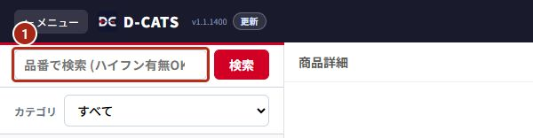
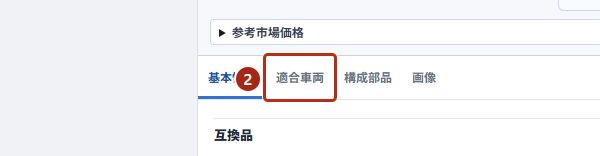
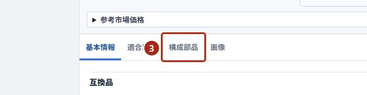

販売管理・商品検索
開き方 メニュー → 販売管理
-
手順 1 / 3
品番を入力する
検索欄に品番を入力して［検索］を押します。候補が多いときはカテゴリで絞り込みます。

画面例（サンプル）・赤枠の番号が操作箇所 -
手順 2 / 3
適合車両を照合する
候補を選び、商品詳細の基本情報と適合車両を照合します。似た品番はメーカーと型式も見比べます。

画面例（サンプル）・赤枠の番号が操作箇所 -
手順 3 / 3
構成部品を開く
部品の内訳は［構成部品］、現物の外観は［画像・写真］で確認します。

画面例（サンプル）・赤枠の番号が操作箇所 確認 選んだ商品の構成部品名と品番を確認できれば完了です。